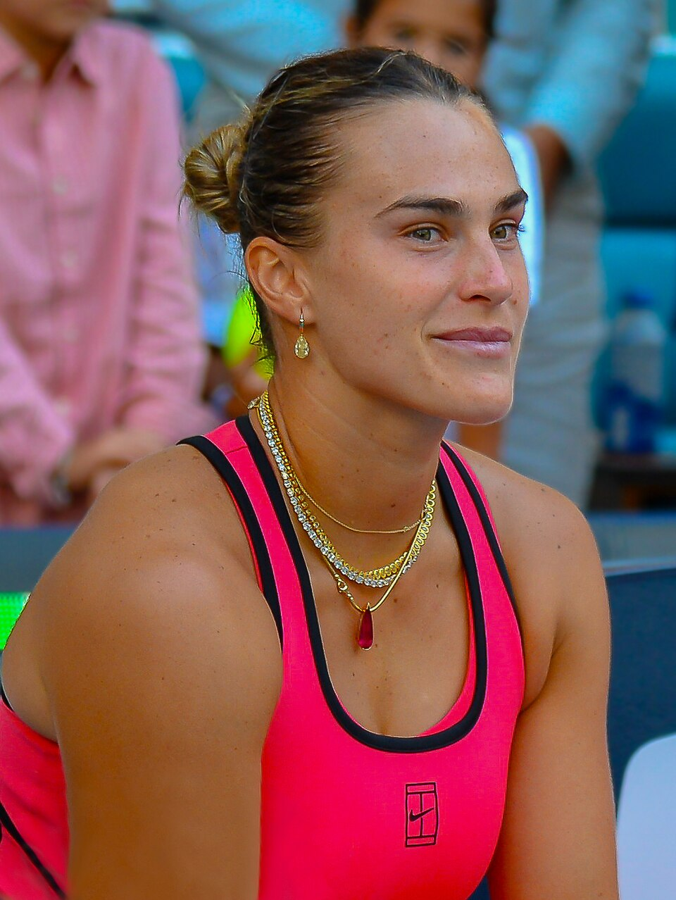

As semifinais de simples do US Open 2026 condensaram boa parte das principais histórias da edição em dois dias no Arthur Ashe Stadium. No feminino, as quatro primeiras cabeças de chave chegaram juntas à semifinal pela primeira vez no torneio desde 1975. No masculino, Alexander Zverev confirmou a condição de principal cabeça de chave, enquanto Ben Shelton venceu o duelo norte-americano contra Frances Tiafoe e alcançou a primeira final de Grand Slam da carreira.
Disputadas em 10 e 11 de setembro de 2026, em Nova York, as quatro partidas tiveram roteiros diferentes. Sabalenka impôs sua potência contra Jessica Pegula, Rybakina precisou virar diante de Coco Gauff, Zverev resolveu dois sets apertados contra Karen Khachanov nos tiebreaks e Shelton reagiu depois de perder a primeira parcial para Tiafoe.
A definição dos quatro confrontos veio depois de uma rodada de quartas marcada por jogos longos, viradas e decisões apertadas. O caminho até essa fase se desenhou depois das quartas de final.
O conjunto de histórias reforçou uma característica que acompanha a história e a tradição do US Open: a capacidade do torneio de produzir partidas de enorme pressão em um ambiente no qual a arquibancada participa diretamente do espetáculo.
Sabalenka mantém domínio em Nova York
Aryna Sabalenka foi a primeira finalista definida no feminino. Diante de Jessica Pegula, a então número 1 do mundo venceu por 7-5 e 6-2, em 1h20, e chegou à quarta decisão consecutiva do US Open. A vitória também ampliou para 19 partidas a sequência invicta da bielorrussa no torneio.
O primeiro set mostrou por que Pegula havia alcançado novamente as fases decisivas em Nova York. A norte-americana sustentou as trocas, salvou situações de pressão e manteve a parcial equilibrada até a reta final. Sabalenka, porém, cresceu justamente quando Pegula sacava para levar o set ao tiebreak.
Com Pegula no saque em 5-6, Sabalenka criou três break points consecutivos e aproveitou a oportunidade para fechar a parcial por 7-5. Foi a quebra que alterou definitivamente o panorama da partida.
Na segunda parcial, a potência e a profundidade dos golpes da bielorrussa passaram a dominar o confronto. Sabalenka conseguiu a quebra para abrir 3-1 e não permitiu que Pegula recuperasse o controle. Outra quebra encerrou o jogo em 6-2.
Sabalenka terminou a semifinal com 29 winners. Mais importante do que o número isolado foi a maneira como transformou pressão em agressividade nos games decisivos. Depois de eliminar Pegula também em momentos importantes de edições anteriores, voltou a impedir a compatriota da torcida local de chegar ao título.
Rybakina alcança sua primeira final do US Open
A segunda semifinal feminina teve o roteiro mais equilibrado da noite. Coco Gauff começou melhor contra Elena Rybakina, mas a cazaque reagiu e venceu por 3-6, 6-4 e 6-4.
Gauff aproveitou melhor o início. Com 3-2 no primeiro set, aumentou a agressividade nas trocas de fundo, conseguiu a quebra e abriu caminho para chegar a 5-2. Rybakina ainda confirmou um game de serviço, mas a norte-americana fechou a parcial por 6-3 diante de uma Arthur Ashe Stadium amplamente favorável à campeã de 2023.
A resposta de Rybakina apareceu no segundo set. A cazaque passou a jogar mais perto da linha de base, buscou posições mais agressivas e começou a reduzir o tempo disponível para Gauff construir os pontos. A mudança permitiu que conquistasse uma quebra e assumisse o controle da parcial.
Mesmo diante da capacidade defensiva de Gauff, Rybakina segurou a vantagem suficiente para fazer 6-4 e levar a semifinal ao terceiro set.
Na parcial decisiva, a disputa permaneceu aberta até os games finais. Rybakina conseguiu a quebra que a colocou em vantagem por 5-3. Gauff respondeu imediatamente e recuperou o serviço, mantendo viva a possibilidade de reação. No game seguinte, porém, Rybakina voltou a quebrar e fechou a partida por 6-4.
A classificação teve um significado adicional. Rybakina já havia garantido durante o torneio que assumiria o posto de número 1 do mundo após o US Open e chegou à decisão buscando mais um grande título em uma temporada na qual também conquistou o Australian Open.
Zverev vence em sets diretos mas sofre nos tiebreaks
No masculino, Alexander Zverev garantiu a primeira vaga na decisão ao derrotar Karen Khachanov por 6-3, 7-6(7) e 7-6(6). O placar de três sets não traduz completamente o nível de pressão enfrentado pelo alemão, especialmente nas duas últimas parciais.
Zverev abriu vantagem ao vencer o primeiro set por 6-3, mas Khachanov elevou seu rendimento e transformou o restante da partida em uma disputa muito mais apertada. O segundo set precisou ser decidido no tiebreak, novamente com o alemão prevalecendo.
O momento mais delicado apareceu na terceira parcial. Sem que nenhum dos dois conseguisse uma quebra de saque, o set chegou a outro tiebreak. Khachanov abriu 3-0 e depois 5-2. Em 6-4, o russo teve duas oportunidades de fechar a parcial e prolongar o jogo.
Zverev resistiu. O alemão venceu os quatro pontos seguintes, reverteu a desvantagem e fechou o tiebreak por 8-6, encerrando a partida sem precisar disputar um quarto set.
A vitória levou Zverev à segunda final de US Open da carreira. A primeira havia ocorrido em 2020, quando perdeu a decisão para Dominic Thiem após abrir dois sets de vantagem. Em 2026, o contexto era diferente: Zverev chegou a Nova York como principal cabeça de chave e como campeão vigente de Roland Garros. A classificação também representou sua terceira final consecutiva de Grand Slam.
Shelton vira contra Tiafoe em semifinal histórica
A última vaga na decisão masculina saiu de um confronto totalmente norte-americano. Frances Tiafoe começou melhor, mas Ben Shelton reagiu para vencer por 4-6, 6-3, 6-3 e 7-5 e alcançar sua primeira final de Grand Slam.
A partida carregava peso histórico antes mesmo do primeiro saque. Shelton e Tiafoe protagonizaram a primeira semifinal de Grand Slam da Era Aberta disputada entre dois homens negros, além de colocarem frente a frente dois jogadores que já haviam construído forte relação com o público de Flushing Meadows.
Tiafoe aproveitou melhor o primeiro set e venceu por 6-4. Shelton, entretanto, não deixou a desvantagem alterar sua proposta. Com um serviço cada vez mais eficiente e maior controle das trocas, o canhoto venceu as duas parciais seguintes pelo mesmo placar: 6-3.
O quarto set foi mais equilibrado. Tiafoe precisava da parcial para forçar um quinto set, enquanto Shelton tentava evitar mais uma longa batalha depois de ter eliminado Carlos Alcaraz em cinco sets nas quartas de final. O duelo permaneceu apertado até 5-5.
Shelton encontrou a abertura na reta decisiva. Depois de confirmar seu serviço, pressionou Tiafoe no 12º game, conseguiu a quebra e fechou o set por 7-5, encerrando a semifinal em quatro parciais.
A classificação colocou o norte-americano de 23 anos em sua primeira decisão de major. Shelton também se tornou o primeiro homem negro norte-americano a chegar à final do US Open desde Arthur Ashe, em 1972.
Data, horário e transmissão das finais do US Open 2026
Final feminina — Aryna Sabalenka x Elena Rybakina
- Data: sábado, 12 de setembro de 2026
- Horário: 17h, de Brasília
- Local: Arthur Ashe Stadium, Nova York
- Transmissão no Brasil: ESPN e Disney+ para assinantes do Plano Premium.
Final masculina — Alexander Zverev x Ben Shelton
- Data: domingo, 13 de setembro de 2026
- Horário: 15h, de Brasília
- Local: Arthur Ashe Stadium, Nova York
- Transmissão no Brasil: ESPN e Disney+ para assinantes do Plano Premium.
Mais do que definir quatro finalistas, as semifinais do US Open 2026 funcionaram como um retrato da própria edição. Sabalenka confirmou sua extraordinária regularidade em Nova York; Rybakina mostrou poder de reação para superar Gauff; Zverev resolveu nos detalhes uma partida que poderia ter se prolongado; e Shelton transformou uma semifinal carregada de significado histórico no maior resultado de sua carreira até aquele momento.
Foram quatro caminhos diferentes para o mesmo destino: a quadra central do US Open e a oportunidade de disputar um dos troféus mais importantes do tênis mundial.